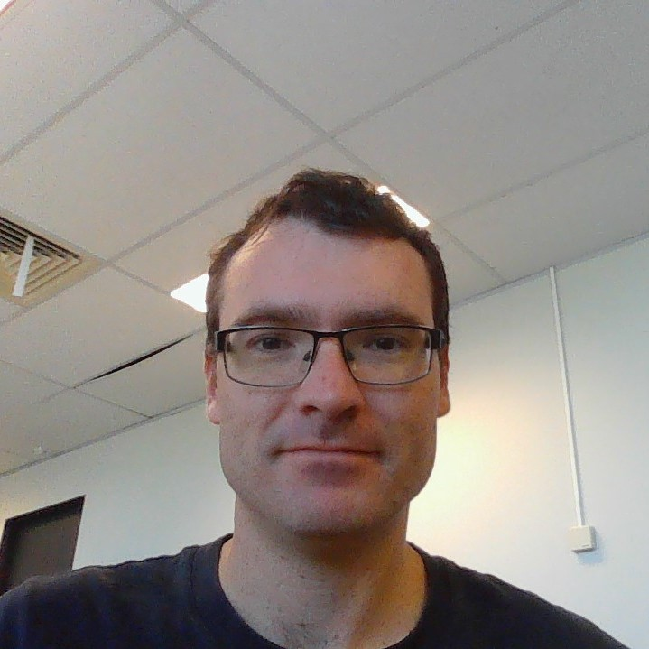

Profiles
Learn about the individual members of our Team.
Group Reflection
Overall as a group the two assignments were very successful. Having a more mature aggregate may have played a part with that but the line between individual responsibility and team cohesion integrated to great effect. Many group members stepped up to take overload from members that were struggling for various reasons in pursuit of the overall team objectives. Unfortunately, due to turbulent global and national circumstances, there have been significant disturbances to group members personal lives, which has impacted their ability to focus on the group project.
On the whole the group communication has been quite solid. Individuals did not feel the need to broadcast every action they take towards their tasks, but the communication was relevant, frequent, informative, and collaborative. The overall use of Github repository could have been improved, as it is a project requirement and the version control features are useful. However, unforeseen circumstances would have forced a work-around for one member, and therefore the flexibility and ease-of-use Microsoft Teams was retained for Assignment 3.
Surprisingly, despite the horrible reputation of group work, working with this Team has been an altogether pleasant experience. Unfortunately, we had a late assignment group member withdrawal with no notice, but again all active group members stepped up to take the slack. In most circumstances the work has been distributed relatively evenly, responsibility taken up be each group member and the work completed in good time, with no last minute rush to submit or penalties resulting from late submissions. Although the take-away for each group member is that in future groups, assigning early section deadlines allows for a buffer to take up any slack that arises or to complete any troubleshooting of issues, such as formatting on the website.
Damian Dousset - S3755544
https://damiand84.github.io/Introduction-to-IT-Assignment-1/
Nationality: Australian with Irish, Scottish, French and English heritage.
Hobbies: During my limited down time when I am not working, studying, helping raise our 3 children or coaching my children’s soccer teams I enjoy building wooden model ships, kayaking, camping and fishing.
I am interested in IT because I believe that it is an important subject to grasp moving into the future due to speed with which technology is influencing our work and private lives. On a more personal note I am excited by the prospects that AR, VR, robotics and AI offer to the future in the way we conduct business and are entertained.
When it comes to IT experience, I have always managed to understand the basics enough to get me by, from downloading and installing games, creating spreadsheets, regular use of excel and Microsoft word and occasionally PowerPoint.
Career plan
Although a career as a Financial Planner/ Investment Analyst is a far cry from my current employment, I feel over time I have acquired some of the skills necessary for a financial firm such as setting goals, meeting deadlines, communicating with others, oral and written skills, multitasking etc. These skills, coupled with a natural interest in finance, a mathematically driven mind, and an eagerness to learn more about the finance field, make employment in the finance sector a natural choice.
Working in a large firm would likely require working in the CBD so ideally Brisbane or Sydney would be my ideal preferences with a small commute to work each day. With my current employment requiring routine and discipline I wouldn’t find it excessively different from that expected of a large finance corporation.
Although a change in career path at this stage would mean a drop in salary, by the time I switch jobs my wife will be back at work and all 3 children will be at school meaning we will be back on a dual income.
I am currently half way through my Bachelor of Business Degree. The next half of the degree will take approximately another 3.5 years which will align with our youngest daughter starting kindergarten and my wife resuming full-time employment. Once I have finished my degree, and before I leave my current job, I will seek out a Graduate investment analyst/ financial planner position where post grad experience in the field is desirable but not essential. Along with my business degree it will also be beneficial for me to have some experience with Microsoft Excel, so, unless already gained through my degree, I will also undertake an Excel course to brush up on my skills. Also, prior financially modelling experience is also often a requirement in the investment analyst field so I should also consider taking an additional subject that will give me this experience.
Reflection
Much like assignment 2, I found Microsoft teams was useful for regular communication, brainstorming ideas and uploading documents that didn’t require any kind of version control, this was especially evident as Microsoft teams has a phone app available which makes it easier to be notified of any messages.
Towards the end of assignment 3, as all the parts came together, GitHub was used in a rudimentary form to allow for visibility and tracking of changes. With regular use of GitHub by all members working on an important project over a long period, I’m sure GitHub would be greatly beneficial to avoid loss of man hours in certain circumstances that would prove costly to an organisation.
Despite differing time zones, most of the team were able to keep up regular communication and were available to put forward their ideas to the group. Even with the Coronavirus pandemic and natural disasters the group has managed to put together a great looking final product and I’m really happy with how it’s turned out.
Andrew Fraser - S3666690
I am an Australian citizen living in Brisbane who works as a Supply Chain Manager for a Marine Construction company conducting projects around the world. I have worked around Australia, in Indonesia, Singapore, Egypt, Nigeria, Belgium and Germany.
I am studying a Bachelor of Business: Logistics and Supply Chain Management which I begun in mid-2016 and am in my final few units. In SP4 2019 I enrolled in Introduction to Information Technology as an elective, but was informed from student services that this unit was too similar to another compulsory unit and that if completed, I would not receive credit for IIT. Happily, the compulsory unit is not available until 2021 and IIT is the substitute unit!
Outside of work and study I am a novice powerlifter who was preparing for my first sanctioned meet in Sydney in May, which unfortunately looks like it will be cancelled.
My interest in IT was sparked as a teenager, through video games, and then again through the course of my career, having witnessed the growing capabilities and usage of IoT, among others, in industry. Particularly clear to me is the moment our Manager Director sent through the profiles of two IoT companies with the message “Find a useful application of these platforms on your project and report back to me”.
My experience in IT is reasonably limited, stemming from learning in studies and everyday professional activities. I am a competent user of the basic Office suite, have taken part in development of our proprietary ERP, entirely as a key user, and am a user of other data platforms, such as Power BI.
I chose to study at the Royal Melbourne Institute of Technology due to the major they offered, Logistics and Supply Chain Management. My choices at the time through distance learning was the Diploma to Professional Diploma pathway through the Chartered Institute of Procurement and Supply, a Bachelor of Business through RMIT, Griffith or UniSA, or the Bachelor of Business: Logistics and Supply Chain Management with RMIT. Due to the delivery method, specificity, learning pathways and career opportunities I decided upon RMIT and have never regretted the choice.
During the Introduction to Information Technology unit I expect to garner cursory knowledge about useful platforms and applications of IT. I still have one elective unit to complete and I seek to select a unit outside of my typical knowledge-base while still learning something with relevancy to my chosen occupation. Not having any experience with programming, my initial goal is to learn about the uses of programming, abilities and capabilities of different programming languages, and to reflect upon the useful applications of programming languages in my everyday professional activities.
Career plan
The desired position, Fleet Manager - Containers and General, is a management role based in Brisbane for a large multi-national company. It fits my experience in international freight, managing multiple sites with inventory, their own network of deliverables, and my experiences with large-volume cargo such as containers and irregular freight. It would require the applicant to manage operational and strategic goals, providing satisfaction in completion of tangible objectives, as well as significant higher-level strategy and process development, implementation and improvement. In addition, it is based in my home-town, ending a streak of 9-years of location work and it is with a well-known, reputable organization with room to climb.
The applicant needs developed analytical and logistical reasoning skills, high-level people management competencies, as well as significant expertise in supply chain network operation, analysis and design, particularly with heavy experience in multi-modal sea, road and rail freight. The applicant would have 15-20 years of industry experience, with proven experience in the role, although perhaps in a smaller-scale operation, and a Master of Logistics and Supply Chain Management.
This position is a 5-10-year goal for me; I have 10 years of industry experience, with 5 years of experience at a national level in operation, analysis and design of multi-million dollar supply chains, compared to billion-dollar supply chains operated by the Toll Group. I am, with luck, within 9 months of completing my Bachelor level qualification in Logistics and Supply Chain Management and already possess Diploma’s in Procurement and Supply and Workplace Health and Safety.
In the next 10 years I will work toward my goal through continued professional development. I will finish my Bachelors and after a period of 6-12 months, in which I will pay off my student debt, I will enrol in the Masters of Logistics and Supply Chain Management through RMIT. I will proceed with this at half pace, aiming to complete the Masters in 11 study periods, or 3 years.
I will continue to seek professional challenges in my work, taking on activities I have not conducted before and setting ambitious objectives for the units under my purview. In the mean time I may seek employment in a company in which I believe I can advance my career prospects, either through exposure, reputation or experience, such as taking on a Project or State Procurement or Supply Chain Management role with a tier 1 company based in Australia.
Reflection
Most group members at this late stage of the unit have a reasonable report and level of understanding. Therefore the forward thinking and collaboration between group members was very positive. Each active group member took initiative at certain points to take upon themselves work that bettered the overall product. For example, Damian took the presentation upon himself early and without seeking advice he produced quite a good product, seeking group feedback when the task was mostly completed.
Use of Git repository could be improved. Because of familiarity and the ease of Teams group chat, it was maintained as the collaboration and file sharing platform. However, after feedback from Assignment 2 it was determined by the group to promote Github utilisation, leading to significant duplication of effort which potentially endangered the integrity of the repositories version control with the same files stored and updated in two locations. Unfortunately this was more or less unavoidable, with one member unable to use Git through unforeseen circumstances.
The drop off of buy-in from some group members at this late stage of the unit was surprising. A significant drop in participation was noted from one group member in particular, which was disappointing to see. However, the assignment delivery was never in question thanks to the forethought and planning of the active group members.
Adam Matthews - S3853376

Profile
https://github.com/amatt06/IIT
I am a full time student from Townsville, North Queensland who has moved to Brisbane for greater opportunities in the field of Information Technology, more specifically- Software Development. While I love all to do with computers, in my free time you will find me fishing, listening to music or intently following world sport, from Australian Rules Football to Formula 1 racing. A long term goal of mine is to one day be able to merge these pastimes with my fascination for software development in a professional setting.
My interest in the IT field is to be able contribute to technology in the fishing world, or be a part of a sports team or organisation that I have grown up loving. My fascination for software development sparked early in primary school when it was announced that there would be testing for North Queensland’s first ever “laptop class” in primary education. Having passed the test and been admitted into the class I was able to see in just two years how accessible and connected the world was becoming. Learning to create my first programs, and countless simple games afterwards, was where my interest truly flourished into fascination.
Career plan
An example of my ideal job in IT would be a software developer in the research and development field for and organisation such as Renault Sport Racing. This particular advertisement demands a candidate that can make results from varying modes of testing available to engineers in an organised and streamlined approach. Ultimately, this position would give me the opportunity to play a significant role in developing the car. Having the ability to contribute to a potential Formula 1 World Championship is what makes this position truly appealing to me.
The skills that are required for the position include; exceptional proficiency in Python and JavaScript programming languages, as well as the ability to use a number of programs for building user interfaces. It is also a requirement of the candidate to be able to accommodate the real-time communication of data through libraries such as Socket.IO. No essential qualifications have been identified by the team. However, the applicant must have several years of experience in writing applications in a professional environment and a thorough knowledge of web databases.
I currently do not possess any experience practicing software development professionally, nor do I possess any valid qualifications yet. Further, my skills in the appropriate coding languages and in online database services are very minimal. Any skills I have gained in this area have only come from nearly one month of study and casual experimentation in my own time.
To obtain these skills I must, as a minimum, be an active participant in every area of my studies. Including not only the technical aspects, but also participating in the parts that will teach me to excel in a professional team-oriented environment. To make this position truly realistic to me however, I will have to practice my proficiency in creating my own projects outside of just the university, as well as keep up to date with all the relevant languages and systems as the IT field continues to grow and expand. Even though this particular position doesn’t require any specific qualifications, it is likely that similar jobs in the future will. This will drive me to gain as much accreditations as I can, starting with a university degree. Further, gaining as many possible qualifications will only hold me in good stead for any future prospects. Lastly, I will gain the experience needed over years of relevant professional work. This will start at entry level and include simple tasks such as maintaining, testing and debugging; and will grow into more complex projects. This technical experience will also be complimented by my growing confidence in a professional, team environment as a result.
Reflection
Upon reflection I feel that my communication improved compared to the first group assignment. This came through both a better understanding of Microsoft Teams and its features, as well as growing familiarity with the group members.
There was great room for improvement however as I believe my time management was not quite as efficient as it could have been. The work I took on was completed before the deadline and to a decent standard. However, I would have liked to have had it done far earlier to make it fair on the rest of my group who were trying to utilize as much time as they can for formatting and dealing with late unexpected problems, which proved to be somewhat of an issue during the last task.
I was pleasantly surprised with the overall drive and commitment of the group given we are coming to the end of a long study period given the countless external pressures due to Covid-19 and the very foreign way of living that comes with it.
Jack Wilson - S3858813
https://github.com/GameMaster1940/My-Profile
My name is Jack Wilson and I am from South Gippsland, Victoria. I moved down to South Gippsland in 2013 from Melbourne where I had been living since I was born. I finished Year 12 with a VCAL Certificate. I didn’t do VCE due to health reasons, but I still wanted to go to university. Back in February I found out about this course at Open Universities. I am now a fulltime student at RMIT University who is working online. I am working towards ultimately getting a master’s degree in Computer Science.
My main interest in IT revolves around studying and working with the latest technology. Given my various disabilities, I have always been interested in robotics, self-driving cars and other such technology that will allow me to lead a more independent life.
The reason I chose to come to RMIT was because it offered the best course options regarding IT. A qualification in this degree will give me a broader range of job opportunities.
From my studies I was mainly hoping to obtain broad spectrum skills around IT, more specifically learning skills that revolve around all different areas of programming.
Career plan
My ideal job is a job as a Software Engineer at Google. This job requires you to develop software for the company and it will see you work with Google’s next generation software and hardware. I have always wanted to work at Google, and with an aspiration to be a software developer, this job is highly appealing to me. This position also comes with a good salary of approximately $109,368 AUD per year.
- Minimum Qualifications:
- The minimum qualification required for the job is a Bachelor’s degree in Computer Science or related degrees, or similar level of past experience.
- 4 years of work experience in software development.
- Experience and knowledge with C, C++, Java or Python.
- Preferred Qualifications:
- The preferred qualification for the job is a Master’s degree or PhD in computer science or related degrees, or similar level of past experience.
- Experience in two or more main stream programming languages such as C, C++, Java etc.
- Strong interest in programming.
- Excellent written and verbal communication skills.
I do not currently meet any of the qualifications required for the job. However, to reach all the required qualifications, my plan is to first complete my Bachelor’s degree including all the minor studies with a GPA of at least 2.0 out of 4.0. Upon completion of my Bachelor’s degree, I aim to study my Master’s Degree in Computer Science on a part time basis whilst working in an IT position at the same time. This will enable me to get the 4 years’ work experience required for the position. Once I have at least 4 years of work experience in a position in the field and have completed the Master’s degree, I will then have met the qualifications I feel are necessary for the job (Royal Melbourne Institute of Technology).
Reflection
What went well: We worked collaboratively as a team and got a lot done in terms of workload, doing especially well with the first group assignment (task 2) achieving 75 out of 100.
What could be improved: Maybe a little better time management since we did need to ask for an extension with the 2nd group assignment (task 3). However overall, I believe generally we did the best we could in the time provided.
At least one thing that was surprising: We achieved higher results than I had anticipated, given that it was a group assignment and also the first time I have worked in a group online at uni.
At least one thing that you have learned about groups: You have more knowledge and experience to draw on in a group compared to working individually. A good example of this being the programming of our fishing app for task 3 where one of our members had more experience in this area.
Compare and Contrast
Each career plan follows a similar structure, in that it’s foundation is formal education, more specifically an undergraduate or graduate pathway beginning with RMIT. Two of the ideal jobs are within the IT sector and begin in the same place, with an undergraduate degree in Information Technology. All of the career plans include further education, two of those moving on to Masters level education and all seeking additional formal skills training through other private institutions.
Half of the ideal jobs are in the IT sector, one in the Financial section, and one in Logistics and Transport Services. The required skills and experience are quite different, even within the IT sector. Half of the career plans are for mature-aged students who have significant work and life experience, therefore their career plan is more developed.
The two IT related jobs require experience with programming languages of some kind, yet given the difference between the desired applications (cybersecurity, development of software for Google, development of software for sports racing), this proves the vastness of opportunity that IT offers.
One of the career plans represent a progression in a similar field (Andrew- Fleet manager), one represents a completely different occupation all together (Damian- Financial Planner/ Investment Analyst) and the rest represent an opportunity to enter the workforce (Adam- Software Developer, Jack- Software Engineer).